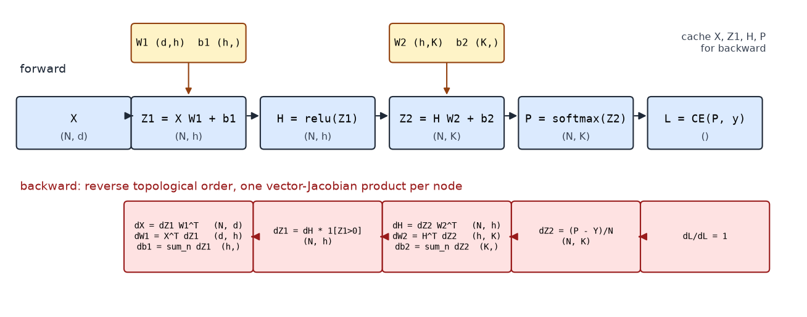
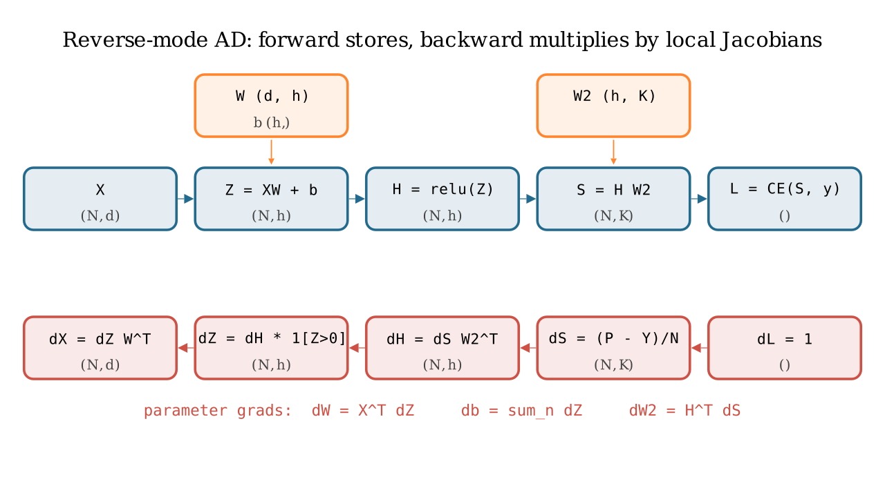
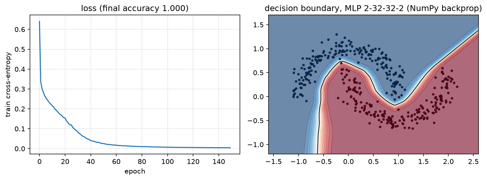

Backpropagation¶
Why this matters at staff level. Backprop is the one derivation every ML depth round can demand at the whiteboard, and the one coding task ("MLP forward and backward in NumPy, no autograd") that separates people who use frameworks from people who could build one. The strong signal is not reciting the chain rule: it is writing \(dW = X^\top dZ\) with the shapes that force it, explaining why the bias gradient sums over the batch, knowing that reverse mode costs about \(2\times\) a forward pass and why, and connecting the activation memory it needs to checkpointing and to how large models are actually trained.
TL;DR: the interview card¶
- Reverse-mode AD: forward computes and caches; backward walks the graph in reverse topological order, each node computing one vector–Jacobian product (VJP) \(\bar x = \bar y\, \partial y/\partial x\). You never form a Jacobian.
- Affine layer \(Z = XW + b\): \(\boxed{dX = dZ\,W^\top},\ \boxed{dW = X^\top dZ},\ \boxed{db = \sum_n dZ_{n,:}}\). Shapes: \((N,d_{out})(d_{out},d_{in})\), \((d_{in},N)(N,d_{out})\), \((d_{out},)\).
- Elementwise \(h = f(z)\): \(dz = dh \odot f'(z)\). ReLU: mask. Sigmoid: \(s(1-s)\).
- Softmax + cross-entropy fused: \(\partial L/\partial Z = (P - Y)/N\).
- General matmul \(C = AB\): \(dA = dC\,B^\top\), \(dB = A^\top dC\). Broadcast in forward \(\Rightarrow\) sum in backward; reshape/transpose in forward \(\Rightarrow\) the inverse reshape/transpose in backward.
- Cost: backward \(\approx 2\times\) forward FLOPs (two GEMMs per Linear vs one), so a training step \(\approx 3\times\) forward. Reverse mode gives all parameter gradients for one extra pass; forward mode would need one pass per parameter.
- Memory: every cached activation lives until its backward runs, \(O(L N d)\) for an MLP, \(O(L\,B\,T\,d)\) for a Transformer. Activation checkpointing trades a second forward for \(O(\sqrt L)\) storage.
- Verify with central finite differences in float64: \(|\text{analytic} - \text{numeric}| / (|a| + |n|) < 10^{-6}\). Every layer in this book passes that test.
1. Intuition first¶
Backprop is the chain rule organised so that no work is repeated. Take the scalar chain
Forward with \(x = 2, w = 1.5, y = 1\): \(z = 3, h = 3, L = 4\). Backward, starting from \(\partial L/\partial L = 1\) and multiplying one local derivative at a time:
Each step used the upstream gradient (a number we already had) and one local derivative. The pattern generalises exactly: replace numbers by tensors and "multiply by the local derivative" by "apply the local vector–Jacobian product".

Top row: the forward graph of a 2-layer MLP with the shape at every node. Bottom row: the backward pass, which visits the nodes in reverse order; every box is one VJP whose output has the shape of the node's input. Read the parameter gradients off the boxes under \(W_1\) and \(W_2\).

The same graph drawn as data flow: blue arrows carry values forward and are cached; red arrows carry \(\bar{(\cdot)}\) backward and each red box is a single VJP.
Three ideas to keep separate.
- The computational graph is a DAG whose nodes are intermediate tensors and whose edges are the primitive ops that produced them.
- A topological order is any ordering where each node comes after its inputs. The forward pass produces one for free (execution order); backward walks it in reverse.
- A VJP is what each primitive contributes: given \(\bar y = \partial L/\partial y\) it returns \(\bar x = \bar y \cdot \partial y / \partial x\) for each input \(x\), accumulating if \(x\) feeds several nodes.
2. The math¶
Notation: for any intermediate tensor \(T\), write \(\bar T := \partial L/\partial T\), same shape as \(T\). All data is row-major, \(X \in \R^{N\times d_{in}}\).
2.1 The affine layer, with shapes¶
\(Z = XW + b\) with \(W \in \R^{d_{in}\times d_{out}}\), \(b \in \R^{d_{out}}\). Componentwise, \(z_{nk} = \sum_i x_{ni}W_{ik} + b_k\). Suppose we are given \(\bar Z \in \R^{N\times d_{out}}\).
Gradient w.r.t. \(W\). \(W_{ik}\) affects \(z_{nk}\) for every \(n\) (and no other column), with \(\partial z_{nk}/\partial W_{ik} = x_{ni}\). Chain rule, summing over everything \(W_{ik}\) touches:
The shape forces it: the only product of \(X\) \((N, d_{in})\) and \(\bar Z\) \((N, d_{out})\) that yields \((d_{in}, d_{out})\) is \(X^\top \bar Z\). The sum over \(n\) is the batch: each example contributes an outer product \(x_n^\top \bar z_n\), and \(X^\top\bar Z\) is their sum.
Gradient w.r.t. \(X\). \(x_{ni}\) affects \(z_{nk}\) for every \(k\) with \(\partial z_{nk}/\partial x_{ni} = W_{ik}\):
Gradient w.r.t. \(b\). Broadcasting adds \(b_k\) to \(z_{nk}\) for every \(n\), so \(\partial z_{nk}/\partial b_k = 1\) for all \(n\):
In words: a value that was copied to many places in the forward pass receives the sum of the gradients from all those places in the backward pass. This single rule explains every "why do I sum here" question in the book.
2.2 Matrix multiplication in general¶
For \(C = AB\) with \(A \in \R^{n\times m}\), \(B \in \R^{m\times p}\), and upstream \(\bar C \in \R^{n\times p}\): \(c_{ij} = \sum_k a_{ik}b_{kj}\), so \(\partial c_{ij}/\partial a_{ik} = b_{kj}\) and \(\partial c_{ij}/\partial b_{kj} = a_{ik}\). Summing over all outputs each entry touches:
The affine layer is the case \(A = X\), \(B = W\). For batched matmul (leading batch
axes), the same formulas hold with swapaxes(-1, -2) in place of \(^\top\); if one
operand was broadcast across the batch, its gradient is additionally summed over the
batch axes (§2.5).
2.3 Elementwise ops¶
If \(H = f(Z)\) elementwise, the Jacobian is diagonal with entries \(f'(z_{nk})\), so the VJP is an elementwise product:
ReLU: \(f'(z) = 1[z>0]\), a mask, with the convention \(f'(0) = 0\). Sigmoid: \(s(1-s)\) with \(s\) the cached output. tanh: \(1 - t^2\). GELU: \(\Phi(z) + z\phi(z)\). For a binary elementwise op \(C = A \odot B\): \(\bar A = \bar C\odot B\), \(\bar B = \bar C \odot A\). For \(C = A + B\): \(\bar A = \bar B = \bar C\) (plus unbroadcasting if shapes differed).
2.4 Softmax and cross-entropy, fused¶
Per row, \(p = \softmax(z)\) and \(L = -\log p_y\). Two routes to the same answer.
Route 1 (through the Jacobian). \(\bar p = -e_y/p_y\) (a one-hot divided by \(p_y\)). The softmax VJP is \(\bar z = p\odot(\bar p - \langle \bar p, p\rangle)\). Here \(\langle\bar p, p\rangle = -1\), so \(\bar z = p \odot (\bar p + 1) = p - e_y\) (the \(y\)-th entry: \(p_y(-1/p_y + 1) = p_y - 1\); others: \(p_k\)).
Route 2 (direct). \(\log p_y = z_y - \log\sum_j e^{z_j}\), so \(\partial \log p_y/\partial z_k = 1[k=y] - p_k\) and \(\bar z = p - e_y\).
Over a batch with mean reduction,
Route 1 shows why the fusion is safe: the \(1/p_y\) from the log cancels against the
\(p_y\) in the softmax Jacobian. Numerically, route 1 divides by a possibly tiny \(p_y\)
before multiplying it back; route 2 never does. This is why every framework has a
fused cross_entropy(logits, y) and why you should never call softmax then log.
2.5 Broadcasting: why gradients sum over the broadcast dimension¶
Suppose \(Y = X + b\) with \(X \in \R^{N\times d}\) and \(b \in \R^{d}\). The forward pass implicitly expands \(b\) to \(B = \mathbf 1 b^\top \in \R^{N\times d}\), then adds. By the chain rule \(\bar B = \bar Y\) and \(\bar b_k = \sum_n \bar B_{nk}\), because \(B_{nk} = b_k\) for every \(n\): each copy contributes its own gradient and they add. Generalising, if a tensor of shape \(s\) was broadcast to shape \(s'\):
- sum \(\bar Y\) over every leading axis that broadcasting prepended;
- sum with
keepdimsover every axis where \(s\) had size 1 and \(s'\) did not.
That is the unbroadcast function of chapter 3; the
bias gradient is its simplest case.
2.6 Reshape and transpose¶
These move numbers without changing them, so their Jacobians are permutation matrices and the VJP just moves the gradient back:
For a transpose with axis permutation \(\pi\), the inverse permutation is
np.argsort(pi). Multi-head attention's (B, T, H, d_head) -> (B, H, T, d_head)
transposes are exactly this (Part V, attention).
2.7 Reverse vs forward mode, and why reverse costs about \(2\times\) forward¶
Let \(L = f_L \circ \cdots \circ f_1 (\theta)\) with Jacobians \(J_\ell\). The gradient is the row vector \(\bar\theta = \mathbf 1^\top J_L J_{L-1}\cdots J_1\) (a \(1\times n_\theta\) row because \(L\) is scalar).
Forward mode evaluates the product left-to-right from a seed column vector \(v\): \(J_L(\cdots(J_2(J_1 v)))\). Each pass gives one Jacobian–vector product \(Jv\), the directional derivative along \(v\). To get the full gradient of a scalar w.r.t. \(n_\theta\) parameters you need \(n_\theta\) passes (\(v = e_1, e_2, \dots\)). With \(10^9\) parameters that is impossible.
Reverse mode evaluates right-to-left from the seed row vector \(\mathbf 1^\top\): \(((\mathbf 1^\top J_L)J_{L-1})\cdots J_1\). Each step is a VJP, and one pass yields the gradient w.r.t. every parameter and every intermediate. This is the "cheap gradient principle" of the AD literature (Griewank and Walther): the gradient of a scalar function costs a small constant times the function evaluation, independent of the number of inputs.
Where does the constant come from? For a Linear layer the forward is one GEMM
(\(2Nd_{in}d_{out}\) FLOPs). The backward is two GEMMs of the same size: \(\bar X = \bar Z W^\top\)
(needed to keep propagating) and \(\bar W = X^\top \bar Z\) (needed for the update). So
backward \(\approx 2\times\) forward and a full step \(\approx 3\times\) forward. For the
first layer you can skip \(\bar X\); for elementwise ops backward is a single multiply.
The price of reverse mode is not FLOPs but memory: every \(X_\ell\) needed by
\(\bar W_\ell = X_\ell^\top \bar Z_\ell\) must be kept alive from the forward pass until its
backward runs. Forward mode needs no such storage, which is why it is used for
Jacobian-vector products, Hessian-vector products (forward-over-reverse) and
jax.jvp, but not for training.
3. Implementation¶
src/mlbook/nn/mlp.py assembles the layers of chapter 1 into a trainable network. The
backward pass is a loop, because every layer already owns its VJP.
class MLP:
def __init__(self, sizes: list[int], activation: str = "relu", seed: int = 0) -> None:
rng = np.random.default_rng(seed)
act = _ACTIVATIONS[activation]
self.layers: list[Layer] = []
for i in range(len(sizes) - 1):
self.layers.append(Linear(sizes[i], sizes[i + 1], rng=rng))
if i < len(sizes) - 2: # no nonlinearity after the last Linear
self.layers.append(act())
def forward(self, x):
h = x # (N, d_in)
for layer in self.layers:
h = layer.forward(h) # (N, d_layer) each layer caches its input
return h # (N, K) logits
def backward(self, dlogits):
d = dlogits # (N, K) = (P - Y)/N from the loss
for layer in reversed(self.layers):
d = layer.backward(d) # (N, d_layer_in) one VJP per layer
return d # (N, d_in)
def sgd_step(self, lr: float) -> None:
for p, g in zip(self.params(), self.grads()):
p -= lr * g # in place: theta <- theta - lr * dL/dtheta
forward is the topological order; backward is its reverse. Nothing here knows
what a Linear or a ReLU is, that is the abstraction boundary that autograd will
later automate.
def train_classifier(model, x, y, epochs=200, lr=0.1, batch_size=32, seed=0):
rng = np.random.default_rng(seed)
loss_fn = CrossEntropyLoss()
n = x.shape[0]
history = []
for _ in range(epochs):
perm = rng.permutation(n)
epoch_loss = 0.0
for start in range(0, n, batch_size):
idx = perm[start : start + batch_size] # (B,)
logits = model.forward(x[idx]) # (B, K)
loss = loss_fn.forward(logits, y[idx])
model.backward(loss_fn.backward()) # seeds with dL/dlogits (B, K)
model.sgd_step(lr)
epoch_loss += loss * idx.shape[0]
history.append(epoch_loss / n)
return history
The training loop is the standard four beats (forward, loss, backward, step) with
the seed of backprop being the loss's own backward(), which returns \((P - Y)/B\).
def make_two_moons(n=400, noise=0.1, seed=0):
rng = np.random.default_rng(seed)
n0, n1 = n // 2, n - n // 2
t0, t1 = np.linspace(0.0, np.pi, n0), np.linspace(0.0, np.pi, n1) # (n0,), (n1,)
x0 = np.stack([np.cos(t0), np.sin(t0)], axis=1) # (n0, 2) upper moon
x1 = np.stack([1.0 - np.cos(t1), 1.0 - np.sin(t1) - 0.5], axis=1) # (n1, 2) lower moon
x = np.concatenate([x0, x1], axis=0) + rng.normal(0.0, noise, size=(n, 2)) # (n, 2)
y = np.concatenate([np.zeros(n0, dtype=int), np.ones(n1, dtype=int)]) # (n,)
perm = rng.permutation(n)
return x[perm], y[perm]

Left: training loss of a 2-32-32-2 ReLU MLP on two moons with hand-written backprop and SGD (lr 0.1, batch 32). Right: the learned decision boundary, a piecewise-linear surface, as a ReLU network must produce. Accuracy exceeds 99% on this task; the test requires > 95%.
How you'd test it: finite differences on every parameter. The test in
tests/test_nn_mlp.py builds a small tanh MLP (tanh is smooth, so central differences
are clean), runs forward/backward once, and for every parameter array compares the
analytic gradient with
using the relative-error metric \(\max_i |a_i - n_i| / \max(|a_i| + |n_i|, 10^{-8}) < 10^{-5}\). Central differences have \(O(\epsilon^2)\) truncation error, and in float64 with \(\epsilon = 10^{-6}\) the round-off error is \(\sim 10^{-10}\), so \(10^{-6}\)–\(10^{-5}\) is the right bar. Never gradient-check in float32; the round-off alone is \(\sim 10^{-2}\).
Full implementation: src/mlbook/nn/mlp.py
"""A complete MLP in NumPy: forward, backward, SGD step, and a synthetic task.
The point of this module is chapter 2 of Part III: everything backprop needs
is ~60 lines once each layer owns its ``forward``/``backward``.
"""
from __future__ import annotations
import numpy as np
from mlbook.nn.layers import GELU, Layer, Linear, ReLU, Sigmoid, Tanh
from mlbook.nn.losses import CrossEntropyLoss
_ACTIVATIONS = {"relu": ReLU, "gelu": GELU, "tanh": Tanh, "sigmoid": Sigmoid}
class MLP:
"""``Linear -> act -> Linear -> act -> ... -> Linear`` (no activation on the logits).
``sizes = [d_in, h1, ..., K]``. Forward input ``(N, d_in)``, output logits ``(N, K)``.
"""
def __init__(self, sizes: list[int], activation: str = "relu", seed: int = 0) -> None:
rng = np.random.default_rng(seed)
act = _ACTIVATIONS[activation]
self.layers: list[Layer] = []
for i in range(len(sizes) - 1):
self.layers.append(Linear(sizes[i], sizes[i + 1], rng=rng))
if i < len(sizes) - 2: # no nonlinearity after the last Linear
self.layers.append(act())
def forward(self, x: np.ndarray) -> np.ndarray:
h = x # (N, d_in)
for layer in self.layers:
h = layer.forward(h) # (N, d_layer)
return h # (N, K) logits
def backward(self, dlogits: np.ndarray) -> np.ndarray:
"""Propagate ``dL/dlogits`` ``(N, K)`` back to ``dL/dx`` ``(N, d_in)``.
Walks the layers in reverse; each layer stores its own parameter grads.
"""
d = dlogits # (N, K)
for layer in reversed(self.layers):
d = layer.backward(d) # (N, d_layer_in)
return d # (N, d_in)
def params(self) -> list[np.ndarray]:
return [p for layer in self.layers for p in layer.params()]
def grads(self) -> list[np.ndarray]:
return [g for layer in self.layers for g in layer.grads()]
def sgd_step(self, lr: float) -> None:
"""In-place ``theta <- theta - lr * dL/dtheta`` for every parameter."""
for p, g in zip(self.params(), self.grads()):
p -= lr * g
def make_two_moons(n: int = 400, noise: float = 0.1, seed: int = 0) -> tuple[np.ndarray, np.ndarray]:
"""Two interleaving half-circles. Returns ``X`` ``(n, 2)`` and ``y`` ``(n,)`` in {0, 1}."""
rng = np.random.default_rng(seed)
n0 = n // 2
n1 = n - n0
t0 = np.linspace(0.0, np.pi, n0) # (n0,)
t1 = np.linspace(0.0, np.pi, n1) # (n1,)
x0 = np.stack([np.cos(t0), np.sin(t0)], axis=1) # (n0, 2) upper moon
x1 = np.stack([1.0 - np.cos(t1), 1.0 - np.sin(t1) - 0.5], axis=1) # (n1, 2) lower moon
x = np.concatenate([x0, x1], axis=0) # (n, 2)
x = x + rng.normal(0.0, noise, size=x.shape) # (n, 2)
y = np.concatenate([np.zeros(n0, dtype=int), np.ones(n1, dtype=int)]) # (n,)
perm = rng.permutation(n)
return x[perm], y[perm]
def train_classifier(
model: MLP,
x: np.ndarray,
y: np.ndarray,
epochs: int = 200,
lr: float = 0.1,
batch_size: int = 32,
seed: int = 0,
) -> list[float]:
"""Minibatch SGD on softmax cross-entropy. Returns the per-epoch mean loss.
``x`` ``(N, d_in)``, ``y`` ``(N,)`` int labels.
"""
rng = np.random.default_rng(seed)
loss_fn = CrossEntropyLoss()
n = x.shape[0]
history: list[float] = []
for _ in range(epochs):
perm = rng.permutation(n)
epoch_loss = 0.0
for start in range(0, n, batch_size):
idx = perm[start : start + batch_size] # (B,)
logits = model.forward(x[idx]) # (B, K)
loss = loss_fn.forward(logits, y[idx])
model.backward(loss_fn.backward()) # dlogits is (B, K)
model.sgd_step(lr)
epoch_loss += loss * idx.shape[0]
history.append(epoch_loss / n)
return history
def accuracy(model: MLP, x: np.ndarray, y: np.ndarray) -> float:
"""Fraction of rows whose argmax logit equals the label."""
pred = model.forward(x).argmax(axis=-1) # (N,)
return float((pred == y).mean())
Retype by hand¶
| Symbol | File | Target time | Test |
|---|---|---|---|
MLP.forward, MLP.backward, MLP.sgd_step |
src/mlbook/nn/mlp.py |
10 min | pytest tests/test_nn_mlp.py -k "parameter_gradient or sgd_step" -q |
Linear.backward (all three gradients, from the shapes alone) |
src/mlbook/nn/layers.py |
5 min | pytest tests/test_nn_layers.py -k linear -q |
CrossEntropyLoss.backward |
src/mlbook/nn/losses.py |
3 min | pytest tests/test_nn_losses.py -k cross_entropy -q |
train_classifier (the four-beat loop) |
src/mlbook/nn/mlp.py |
5 min | pytest tests/test_nn_mlp.py -k two_moons -q |
numerical_gradient + rel_error |
src/mlbook/nn/layers.py |
5 min | used by every test above |
Fine to just read: make_two_moons, accuracy.
Full drill: 2-layer MLP forward + backward + SGD in NumPy, with a finite-difference
check, from a blank file: 25 minutes. Grader: pytest tests/test_nn_mlp.py -q.
4. Systems view: cost, failure modes, trade-offs¶
FLOPs. Per Linear layer: forward \(2Nd_{in}d_{out}\); backward \(4Nd_{in}d_{out}\) (two GEMMs); step total \(6Nd_{in}d_{out}\). Summed over a model with \(P\) weight parameters processing \(N\) examples (tokens), that is the \(6PN\) rule used in every LLM compute budget (Part VI, scaling laws). Elementwise and reduction ops are \(O(Nd)\) and negligible in FLOPs but not in memory traffic.
Activation memory. Backward needs, per Linear, its input \(X_\ell\) \((N, d_{in})\); per ReLU, a mask; per softmax, its output. For an \(L\)-layer MLP of width \(d\) and batch \(N\) that is \(\approx LNd\) values held from forward to backward. For a Transformer with sequence length \(T\) it is \(O(L\,B\,T\,d)\) plus the \(O(L\,B\,H\,T^2)\) attention probabilities unless a fused attention kernel recomputes them. This memory scales with batch size and sequence length, unlike the parameters, and it is why "the model fits but training OOMs" is a thing.
Activation checkpointing (Chen et al., 2016) keeps only every \(k\)-th layer's
activation, and during backward re-runs the forward from the last checkpoint to
regenerate the missing ones. With \(k \approx \sqrt L\) the storage drops from \(O(L)\)
to \(O(\sqrt L)\) layers' worth at the cost of one extra forward pass (step cost goes from
\(\approx 3\times\) to \(\approx 4\times\) forward). Every large-model training stack uses it
(torch.utils.checkpoint; Megatron/DeepSpeed "selective recompute" keeps the cheap
GEMM inputs and recomputes only attention). See Part XIV, training systems
for how this interacts with pipeline and tensor parallelism, and
Part XIV, distributed training for
where the gradients go once you have them.
Failure modes.
- Wrong cache. Caching the output of a Linear instead of its input gives a wrong \(\bar W\) that still has the right shape. Only a gradient check catches it.
- Forgetting to accumulate. A tensor used twice (a residual stream) must add
the gradients from both uses.
=instead of+=is the classic bug. - In-place mutation of a cached tensor. If you modify \(X\) after the forward pass and before backward, \(\bar W\) is computed from the wrong data. PyTorch raises "a variable needed for gradient computation has been modified by an inplace operation" for exactly this.
- Gradient checking in float32, or through a ReLU kink, or with \(\epsilon\) too small (round-off) or too large (truncation).
When to use what.
| Question | Answer | Rule |
|---|---|---|
| Need \(\nabla_\theta L\) for a scalar loss and many parameters | Reverse mode | One backward pass gives all gradients. |
| Need \(J v\) for a chosen direction (sensitivity, Hessian-vector product) | Forward mode / jvp |
No activation storage; cost ~ one forward per direction. |
| Activation memory is the bottleneck | Checkpointing (every \(\sqrt L\) layers, or selective) | Pay ~33% more compute for \(O(\sqrt L)\) memory. |
| Verifying a new custom layer | Float64 central finite differences | Relative error \(<10^{-6}\); test \(\bar X\) and every parameter. |
5. In production¶
Every deep learning framework: reverse mode as the engine
PyTorch's autograd, TensorFlow's GradientTape and JAX's grad are all
implementations of reverse-mode AD over a computational graph; PyTorch's
documentation describes the graph of Function objects whose leaves are inputs
and whose roots are outputs, traced from roots to leaves to compute gradients
by the chain rule. The survey by Baydin et al. is the standard reference for the
history and the forward/reverse trade-off. Sources:
PyTorch autograd mechanics;
Baydin, Pearlmutter, Radul, Siskind, Automatic differentiation in machine
learning: a survey, JMLR 2018, arXiv:1502.05767.
Chapter 3 builds the same thing in 300 lines.
Activation checkpointing: the memory trade every large model makes
Chen, Xu, Zhang and Guestrin showed that dropping intermediate activations and
recomputing them during backward reduces training memory from \(O(n)\) to \(O(\sqrt n)\)
for an \(n\)-layer network at the cost of one extra forward pass per minibatch.
PyTorch exposes it as torch.utils.checkpoint.checkpoint, whose documentation
explains that the checkpointed segment saves only its inputs and recomputes the
forward in backward. This is what lets a 70B-parameter model train at long sequence
lengths on a fixed memory budget. Sources: arXiv:1604.06174;
torch.utils.checkpoint docs.
Karpathy: micrograd and the 'build it in 100 lines' pedagogy
micrograd is a scalar-valued reverse-mode engine in about 100 lines plus a 50-line neural-net library, built to show that backprop over a dynamically built DAG is the whole trick. The tensor-valued engine in chapter 3 follows the same closure-per-op design, adding broadcasting and matmul so that it can express real layers. Source: github.com/karpathy/micrograd.
6. Interview questions and strong answers¶
Derive the backward pass of \(Z = XW + b\). Why does the bias gradient sum over the batch?
\(\bar W = X^\top \bar Z\) because \(W_{ik}\) multiplies \(x_{ni}\) into \(z_{nk}\) for every example \(n\), and the chain rule sums the contributions: shapes \((d_{in},N)(N,d_{out})\). \(\bar X = \bar Z W^\top\) by the symmetric argument. \(\bar b = \sum_n \bar Z_{n,:}\) because \(b\) was broadcast: the same \(b_k\) was added to \(N\) different outputs, so it receives \(N\) gradient contributions. The general rule: forward copies become backward sums. Staff follow-up: what changes if the batch loss is a sum rather than a mean? Every gradient scales by \(N\), which is why the learning rate and batch size are coupled (Part I, optimization) and why frameworks default to mean reduction.
Why is reverse mode preferred for training, and what does it cost?
A scalar loss with \(P\) parameters needs \(\partial L/\partial\theta \in \R^{1\times P}\). Reverse
mode computes \(\mathbf 1^\top J_L\cdots J_1\) right-to-left as \(L\) VJPs, one pass for all
\(P\) gradients. Forward mode computes \(Jv\) for one direction per pass, so it would need
\(P\) passes. The cost of reverse mode is (a) FLOPs: about \(2\times\) the forward, since
each Linear needs two GEMMs backward; (b) memory: every input to a Linear must be
stored until its backward runs, \(O(L N d)\). Staff follow-up: when is forward mode the
right tool? Hessian-vector products (jvp over grad), per-direction sensitivity,
and functions with few inputs and many outputs.
Show that softmax + cross-entropy has gradient \(p - y\) and explain why frameworks fuse them.
Through the log: \(\log p_y = z_y - \log\sum_j e^{z_j}\), so \(\partial/\partial z_k = 1[k=y] - p_k\)
and \(\bar z = p - e_y\). Through the Jacobian: \(\bar p = -e_y/p_y\), and the softmax VJP
\(p\odot(\bar p - \langle\bar p,p\rangle) = p\odot(\bar p + 1) = p - e_y\). The \(1/p_y\) cancels
symbolically; numerically, computing log(softmax(z)) separately divides by a
possibly underflowed \(p_y\) and gives -inf/nan, whereas the fused log-sum-exp
form is finite for any logits. Staff follow-up: how does this generalise to a
vocabulary of 128k tokens? The gradient is still \(p - y\), but materialising \(P\) for
\(B\cdot T\) rows is the dominant memory in LM training; chunked/fused CE kernels
compute it in tiles (Part VI).
You implement a custom layer. How do you convince me its backward is right?
Float64 central finite differences on a random small input and random upstream
weights \(r\): define \(s(x) = \sum \text{forward}(x)\odot r\) and compare
backward(r) with \((s(x+\epsilon e_i) - s(x - \epsilon e_i))/2\epsilon\), relative error
\(<10^{-6}\), for the input and every parameter. Then compare forward values against a
reference implementation (torch.nn.functional) and, if the op exists in PyTorch,
the gradients too. Avoid kinks (ReLU at 0) and float32. I would also test that a
tensor used twice accumulates, and that batching does not couple examples
(the gradient for example \(n\) is unchanged when example \(m\) changes).
Explain activation checkpointing and its cost. When would you not use it?
Backward needs every layer's input; storing them is \(O(L)\) layers of activations. Checkpointing stores every \(k\)-th, recomputes the rest from the nearest checkpoint during backward: memory \(O(L/k + k)\), minimised at \(k = \sqrt L\), for one extra forward (\(\approx 33\%\) more compute per step). I would not use it when memory is not the binding constraint (small models, short sequences) because it wastes compute, and I would use selective recompute (recompute attention, keep GEMM inputs) before full recompute, since attention's activations are large and cheap to regenerate. Staff follow-up: how does it interact with pipeline parallelism? Each pipeline stage holds activations for several in-flight microbatches, multiplying the memory; checkpointing per stage is what makes deep pipelines fit (Part XIV).
Gradient of a residual block \(y = x + f(x)\)?
\(\bar x = \bar y + \bar y\,\partial f/\partial x\): the identity path passes \(\bar y\) through unchanged, and the branch adds its VJP. This is the accumulation rule (\(x\) is used twice) and it is why residual networks do not suffer vanishing gradients: the product of Jacobians has an identity term at every layer. Zero-initialising the last layer of \(f\) makes the block start as the identity (chapter 4).
7. Exercises¶
★ Shapes only. \(X \in \R^{64\times 300}\), \(W \in \R^{300\times 10}\), \(\bar Z \in \R^{64\times 10}\). Write the shapes of \(\bar X\), \(\bar W\), \(\bar b\) and the FLOPs of each backward GEMM.
Solution
\(\bar X = \bar Z W^\top \in \R^{64\times 300}\): \(2\cdot 64\cdot 10\cdot 300 = 384{,}000\) FLOPs. \(\bar W = X^\top \bar Z \in \R^{300\times 10}\): same, \(384{,}000\). \(\bar b \in \R^{10}\): \(640\) adds. Forward was one GEMM of \(384{,}000\); backward is two, the \(2\times\) rule.
★ Accumulation. For \(L = (x\cdot x + 3x)\) with scalar \(x = 2\), trace backprop through the graph where \(x\) feeds two nodes and confirm \(\bar x = 2x + 3 = 7\).
Solution
Nodes: \(a = x\cdot x\), \(b = 3x\), \(L = a + b\). \(\bar L = 1 \Rightarrow \bar a = 1, \bar b = 1\).
From \(a\): \(\bar x \mathrel{+}= \bar a\cdot x + \bar a \cdot x = 4\) (both operands are \(x\)).
From \(b\): \(\bar x \mathrel{+}= 3\). Total \(7\). The test_gradient_accumulates_when_tensor_used_twice
test in tests/test_nn_autograd.py is this exercise.
★★ Bias gradient for a 3-D broadcast (coding). Let \(Y = X + b\) with \(X \in \R^{2\times 3\times 4}\)
and \(b \in \R^{1\times 4}\). Given random \(\bar Y\), compute \(\bar b\) two ways, by the
sum rule and by torch.autograd, and check they agree.
Solution
import numpy as np, torch
dY = np.random.randn(2, 3, 4)
db_rule = dY.sum(axis=(0, 1)).reshape(1, 4) # sum over the axes b was copied along
b = torch.zeros(1, 4, dtype=torch.float64, requires_grad=True)
X = torch.randn(2, 3, 4, dtype=torch.float64)
((X + b) * torch.tensor(dY)).sum().backward()
np.testing.assert_allclose(b.grad.numpy(), db_rule)
★★ Two-layer MLP with hand-written backward (coding). Without using
mlbook, write forward(X, W1, b1, W2, b2) and backward(...) for
ReLU-MLP + softmax CE, and verify every gradient with numerical_gradient on a
\((5, 3)\) input, hidden size 4, 2 classes. Target: 25 minutes.
Solution
import numpy as np
from mlbook.nn.layers import numerical_gradient, rel_error
def forward(X, W1, b1, W2, b2, y):
Z1 = X @ W1 + b1 # (N, h)
H = np.maximum(Z1, 0) # (N, h)
Z2 = H @ W2 + b2 # (N, K)
Z2s = Z2 - Z2.max(1, keepdims=True) # (N, K)
logp = Z2s - np.log(np.exp(Z2s).sum(1, keepdims=True)) # (N, K)
loss = -logp[np.arange(len(y)), y].mean()
return loss, (X, Z1, H, np.exp(logp))
def backward(cache, W2, y):
X, Z1, H, P = cache
N, K = P.shape
dZ2 = P.copy(); dZ2[np.arange(N), y] -= 1; dZ2 /= N # (N, K) (P - Y)/N
dW2 = H.T @ dZ2 # (h, K)
db2 = dZ2.sum(0) # (K,)
dH = dZ2 @ W2.T # (N, h)
dZ1 = dH * (Z1 > 0) # (N, h)
dW1 = X.T @ dZ1 # (d, h)
db1 = dZ1.sum(0) # (h,)
return dW1, db1, dW2, db2
rng = np.random.default_rng(0)
X, y = rng.normal(size=(5, 3)), np.array([0, 1, 1, 0, 1])
W1, b1, W2, b2 = rng.normal(size=(3, 4)), np.zeros(4), rng.normal(size=(4, 2)), np.zeros(2)
loss, cache = forward(X, W1, b1, W2, b2, y)
grads = backward(cache, W2, y)
for name, param, g in zip("W1 b1 W2 b2".split(), (W1, b1, W2, b2), grads):
def f(v, name=name):
args = dict(W1=W1, b1=b1, W2=W2, b2=b2); args[name] = v
return forward(X, args["W1"], args["b1"], args["W2"], args["b2"], y)[0]
assert rel_error(g, numerical_gradient(f, param.copy())) < 1e-6, name
print("all gradients verified")
★★★ Checkpointing arithmetic. A 96-layer Transformer stores 4 GB of activations per layer at your batch size. You have 200 GB free. (a) Without checkpointing, does it fit? (b) With uniform checkpointing every \(k\) layers, what \(k\) minimises peak memory, and what is the peak? (c) What is the compute overhead?
Solution
(a) \(96 \times 4 = 384\) GB: no. (b) Peak \(\approx (L/k + k)\times 4\) GB (checkpoints plus one segment being recomputed); minimised at \(k = \sqrt{96} \approx 10\): \((9.6 + 10)\times 4 \approx 78\) GB. Fits. (c) One extra forward per segment during backward: the forward is recomputed once, so the step costs \(\approx 4\times\) forward instead of \(3\times\), about 33% more compute. In practice you would first try selective recompute of attention only, which frees most of the memory at a fraction of the recompute.
References¶
- Baydin, A. G., Pearlmutter, B. A., Radul, A. A., Siskind, J. M. (2018). Automatic differentiation in machine learning: a survey. JMLR. arXiv:1502.05767
- Griewank, A., Walther, A. (2008). Evaluating Derivatives: Principles and Techniques of Algorithmic Differentiation, 2nd ed., SIAM. Google Books
- Chen, T., Xu, B., Zhang, C., Guestrin, C. (2016). Training Deep Nets with Sublinear Memory Cost. arXiv:1604.06174
- PyTorch. Autograd mechanics. docs.pytorch.org
- PyTorch. torch.utils.checkpoint. docs.pytorch.org
- Karpathy, A. micrograd. github.com/karpathy/micrograd
- He, K., Zhang, X., Ren, S., Sun, J. (2015). Deep Residual Learning for Image Recognition. arXiv:1512.03385. the residual gradient identity of §6.